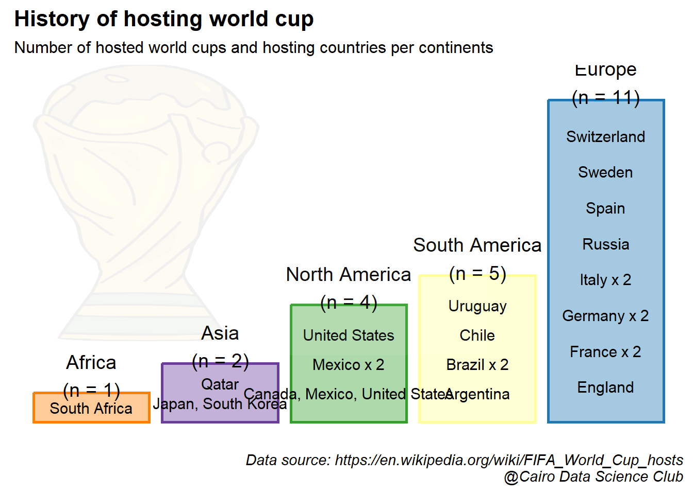
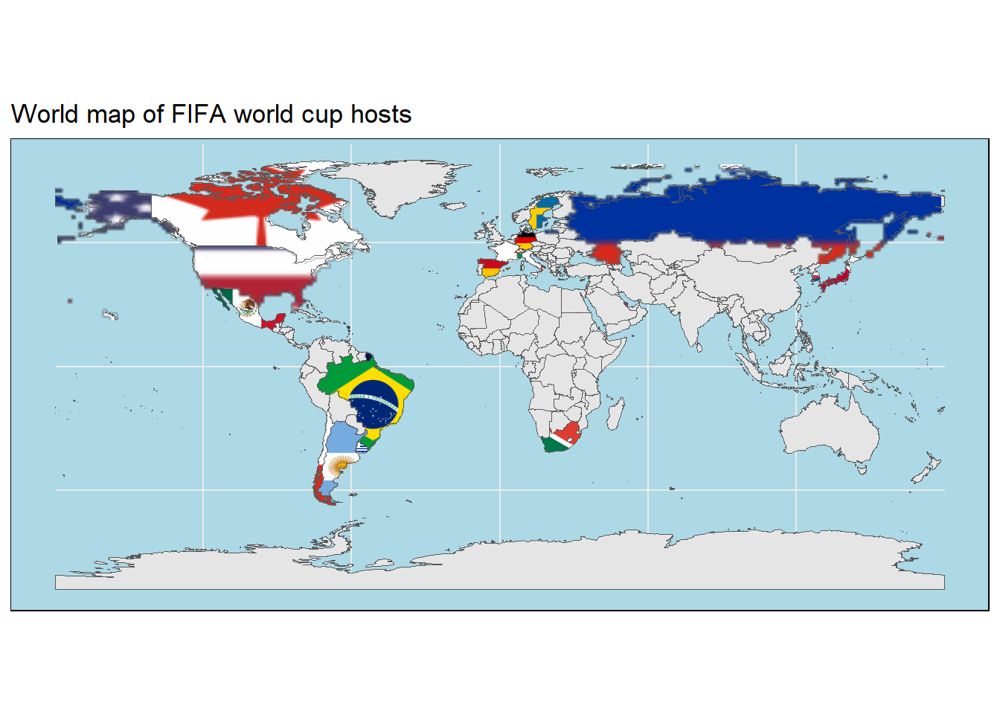
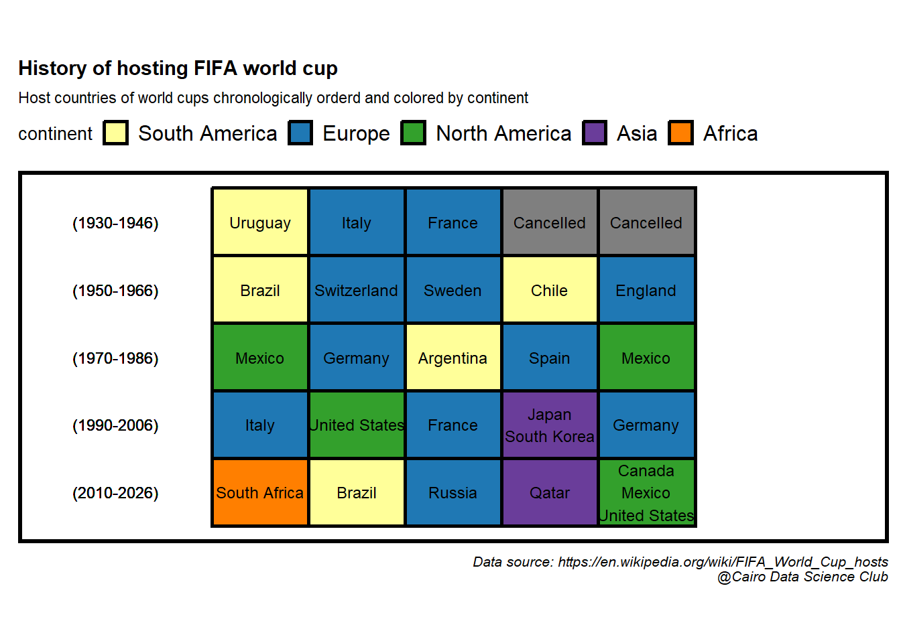
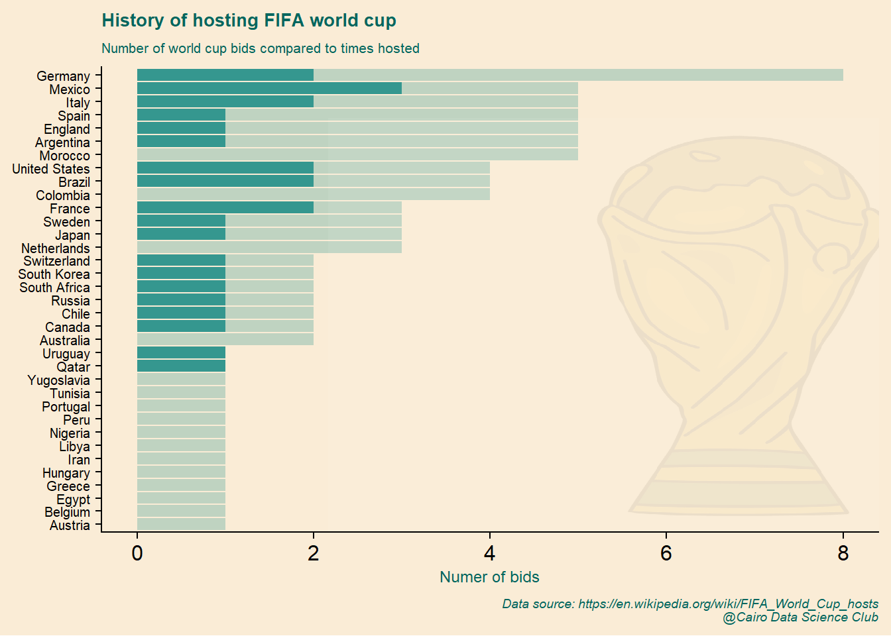
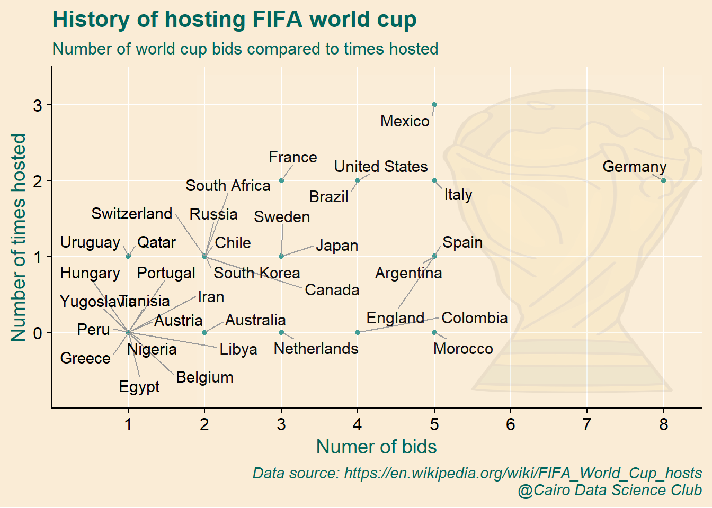
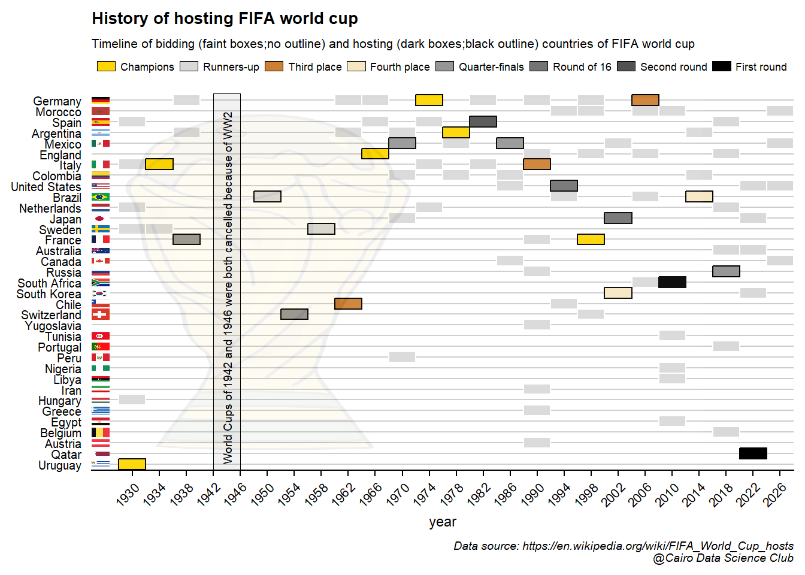

1 History of hosting FIFA World Cup
Overview
An exploratory data analysis project on the history of hosting FIFA world cup.
Outline
Where and how can we get the data?
To start with, we will learn how to scrape Wikipedia directly into R, parse the data tables, and apply quality control to make them ready for the analysis.
How many world cups were hosted in each continent?
Will then move on to explore the number of hosted cups at the level of continents and the geographical distribution of hosting countries.

What is the timeline of hosting the world cup?
Next, will add the time component by generating a condensed timeline of the history of hosting world cups on the level countries and continents.

What is the history of bidding for world cup?
Finally, we will go beyond the mere hosting the championship to explore the bidding process and the performance of the hosting team over the years.

Let’s start by loading the libraries that we’ll utilize in our analysis
#web scrapping
library(rvest)
#everything tidy?
library(tidyverse)
#handling spatial-data
library(rnaturalearth)
library(rnaturalearthdata)
library(sf)
library(ggflags)
library(ggspatial)
library(giscoR)
library(rasterpic)
library(countrycode)
#adding flags in ggplot
library(ggimage)
#Visually explore data tables
library(visdat)
#fit text within a defined area
library(ggfittext)
#set the default ggplot theme
theme_set(cowplot::theme_cowplot())and with that, we’re ready to ride!